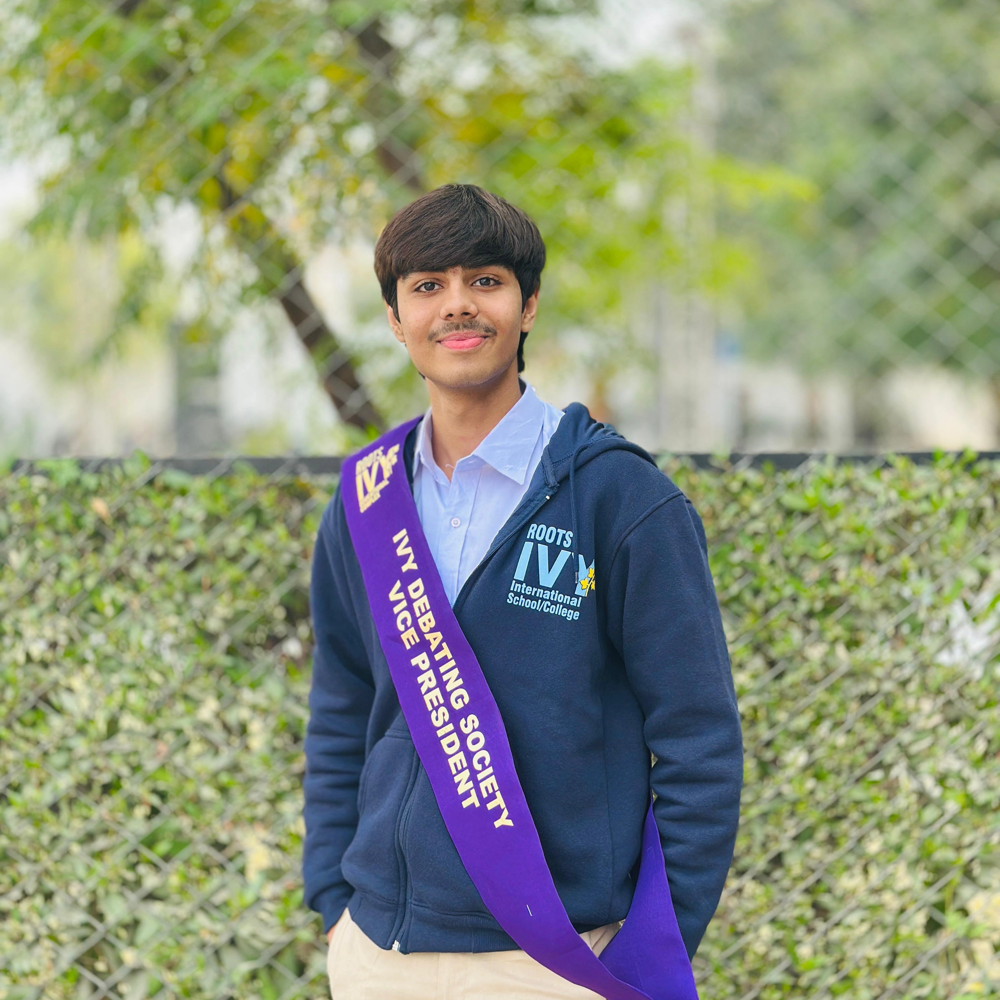
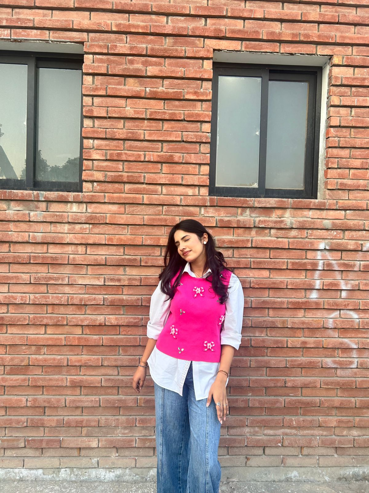

Leadership
Our Directorate

Founder
Muhammad Ayan Farrukh
Developed the strategic vision and long-term roadmap, transforming OIA from an idea into a structured initiative.

President
Muhammad Musa Chohan
Provides executive leadership and strategic oversight across all OIA departments.
Vice President
Ayesha Saifullah
Serves as chief operational strategist, translating OIA's vision into actionable, measurable initiatives.

Chief of Staff
Areeb Rehman
Acts as a key advisor to the Founder and President, supporting decision-making and operational efficiency.